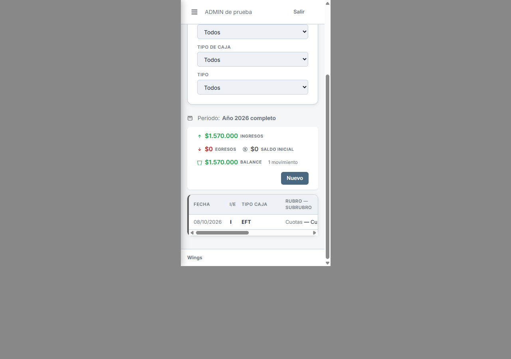
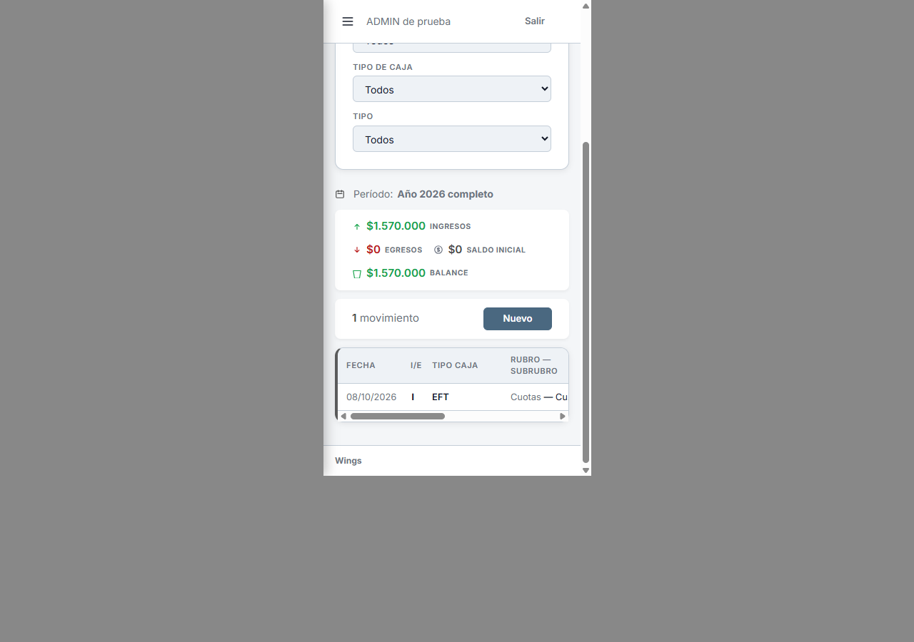
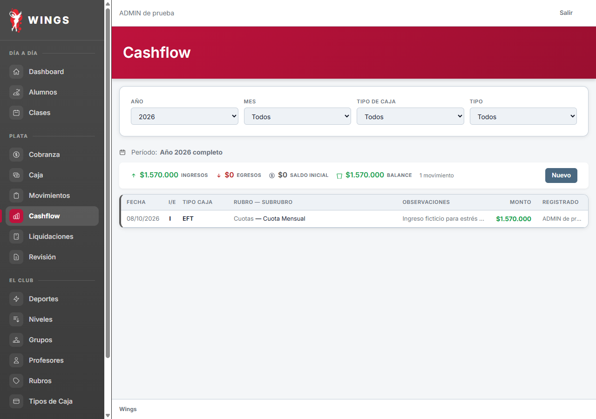
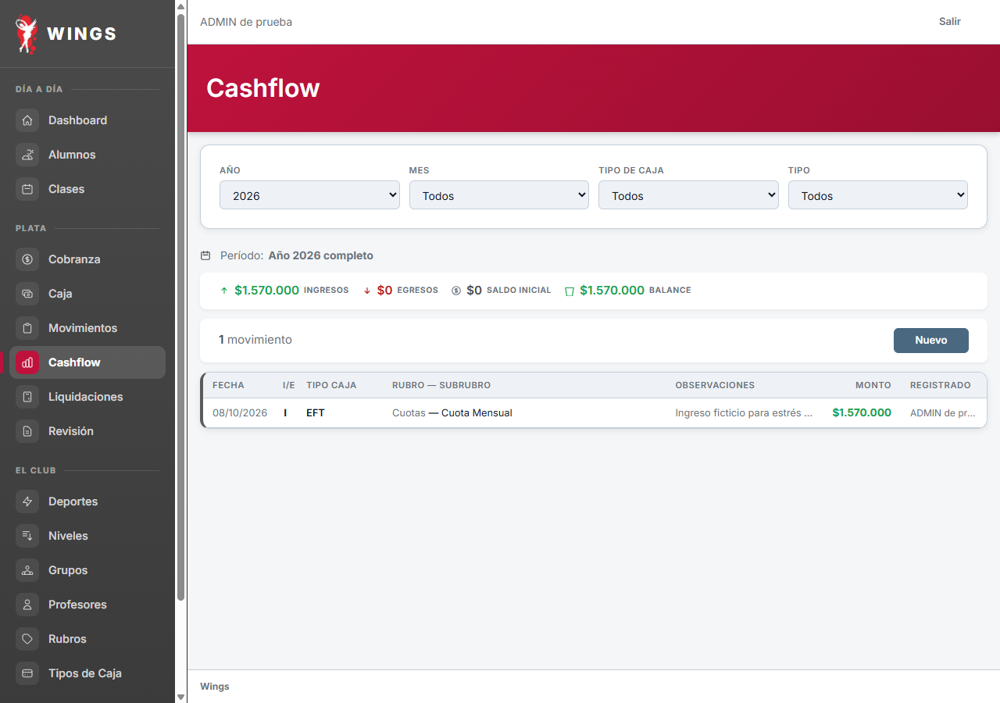
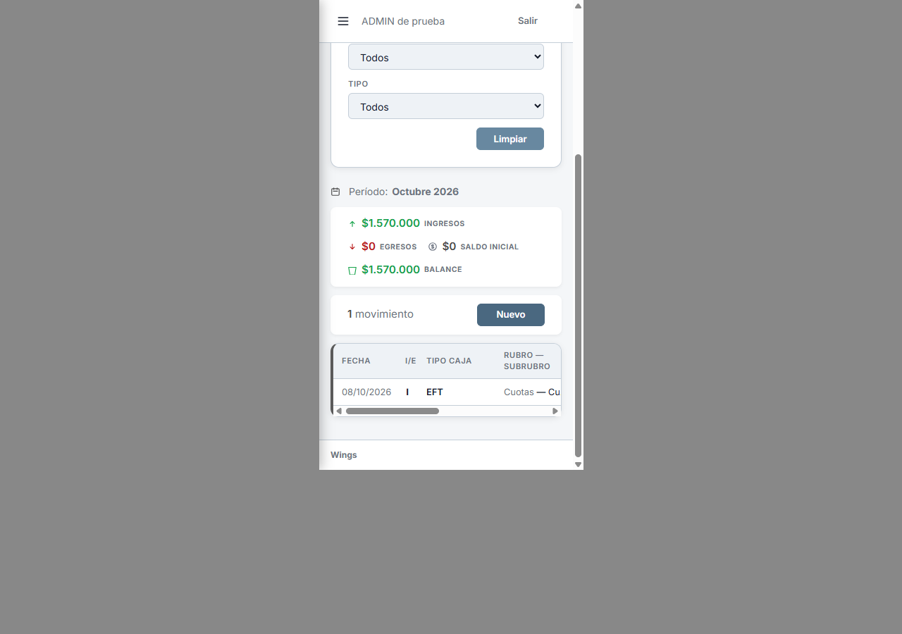
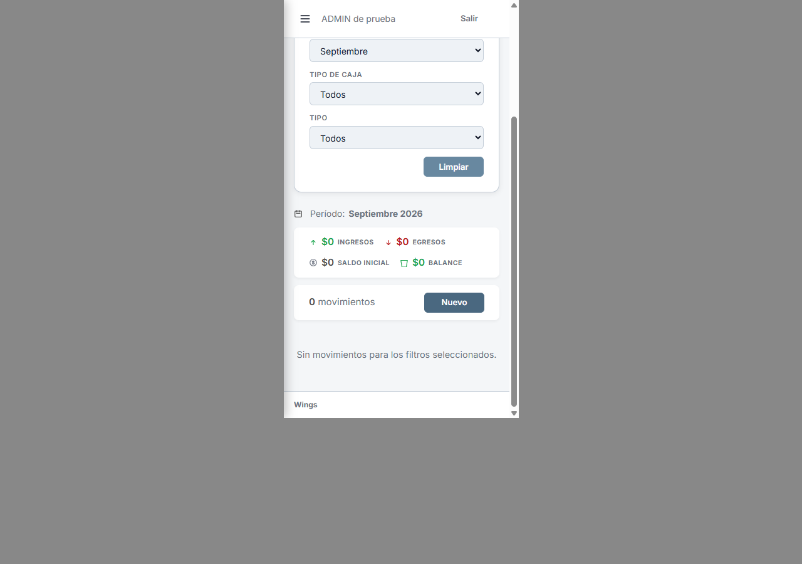

A10 · Cashflow
Propuesta actualizada · escritorio
El selector Período ofrece Día, Semana, Mes y Año. Día y Semana muestran un calendario; Mes muestra año y mes; Año muestra el año.
Ver las cuatro maquetas también en celular
Día · elegís una fecha

Semana · elegís una fecha, se muestra lunes a domingo

Ver Mes y Año en escritorio
Mes

Año

Diseño aprobado y aplicado localmente. Resultado del período = ingresos − egresos; saldo acumulado pendiente de definición.
Antecedente: ubicación de Nuevo, antes y primera propuesta
Propuesta: Nuevo junto al contador, en una barra propia. Totales y período arriba. Limpiar junto a los filtros. Nuevo conserva el verbo y usa el mismo botón de los otros listados.




Escritorio
Actual

Propuesta

Con filtro de mes y sin movimientos




Diseño aprobado por Carlos 08/10; aplicado localmente. Ver resultado aplicado. Capturas de Laravel real con datos ficticios; escritorio 1280×900 y marco 375×667. 08/10/2026. Estas capturas conservan la etapa de propuesta.
Actual: mediciones · Propuesta: mediciones · Control de datos e inventario